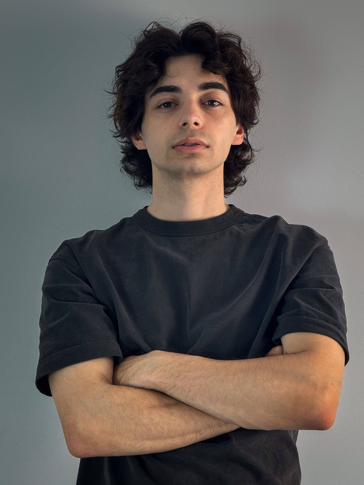
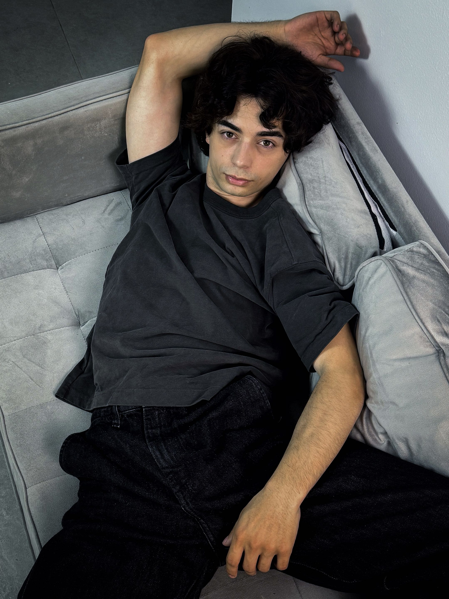
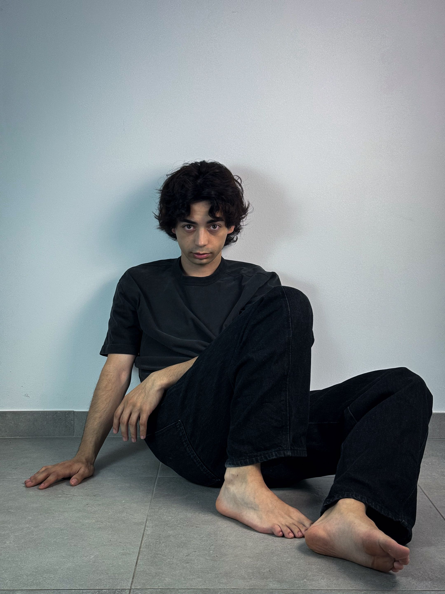
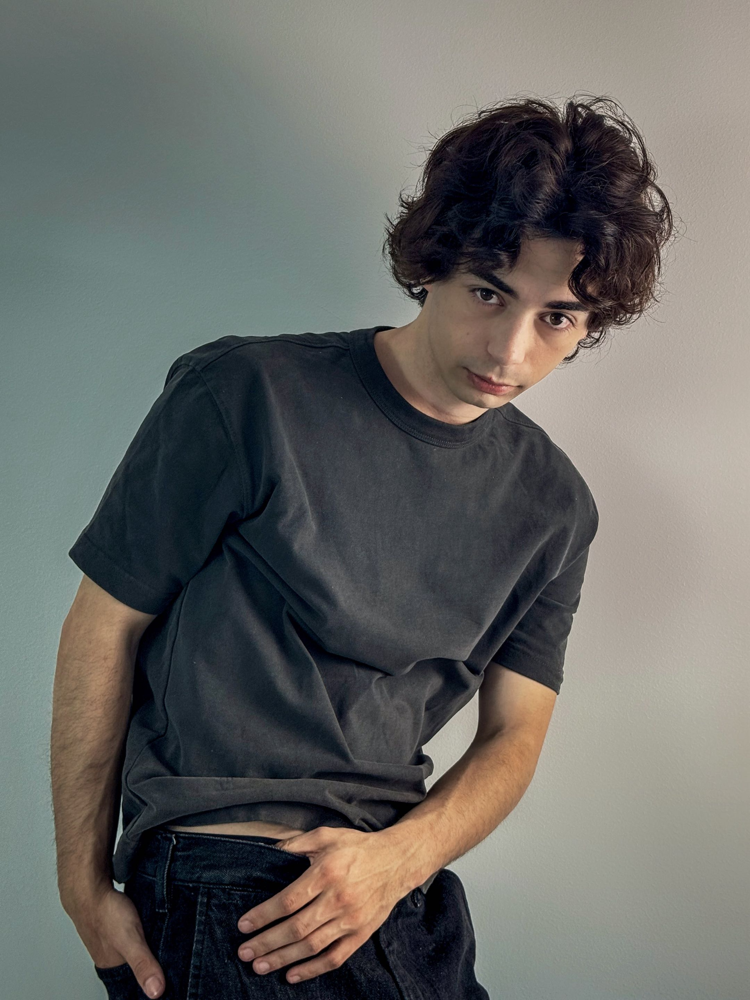
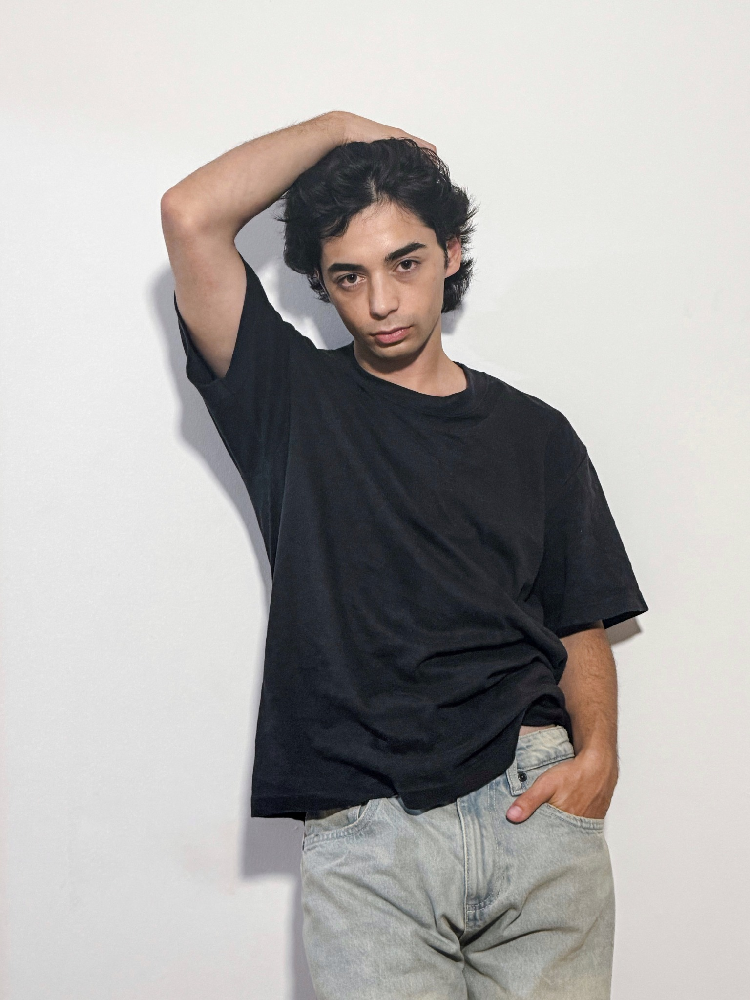
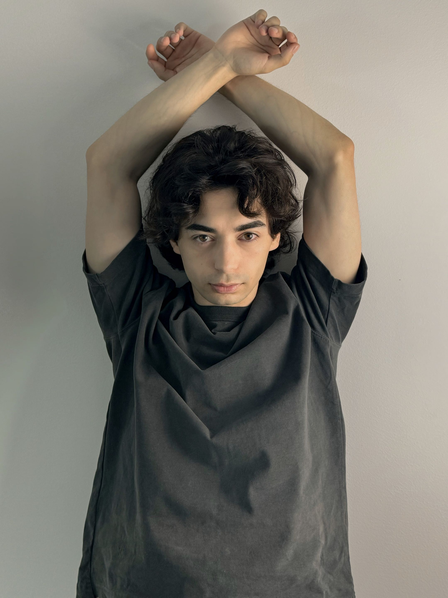
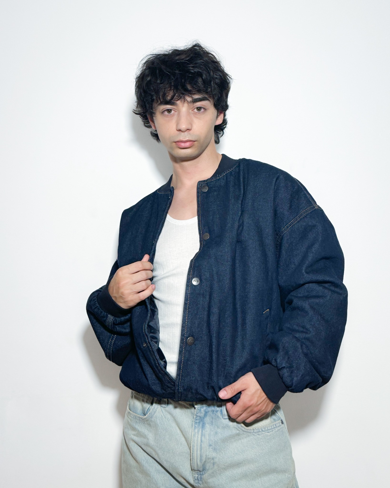
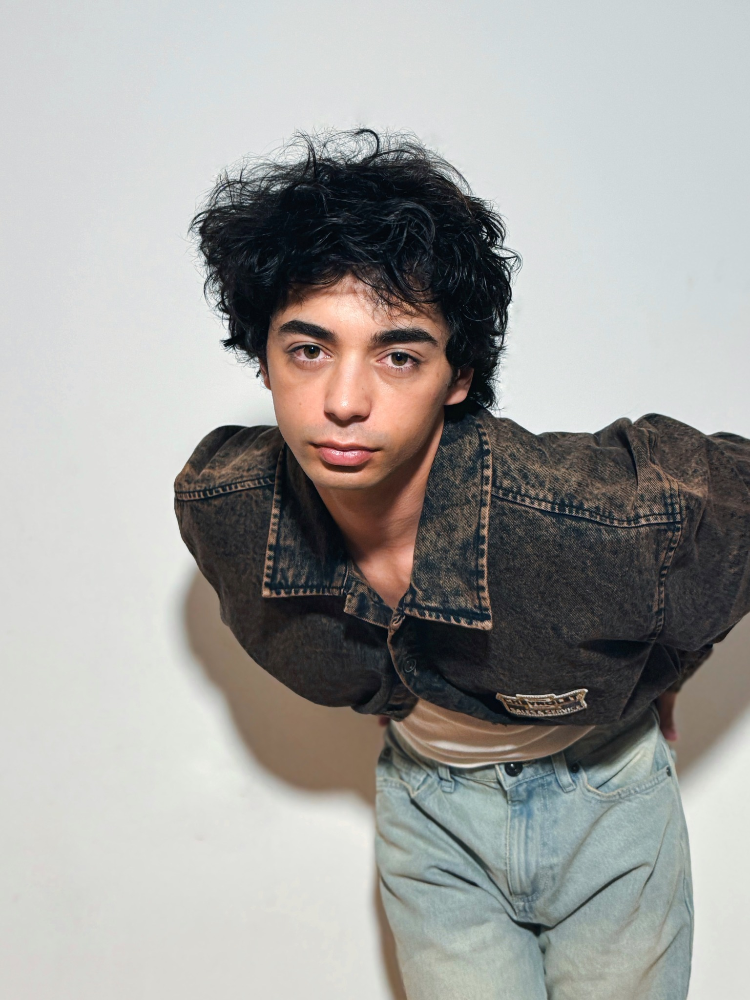
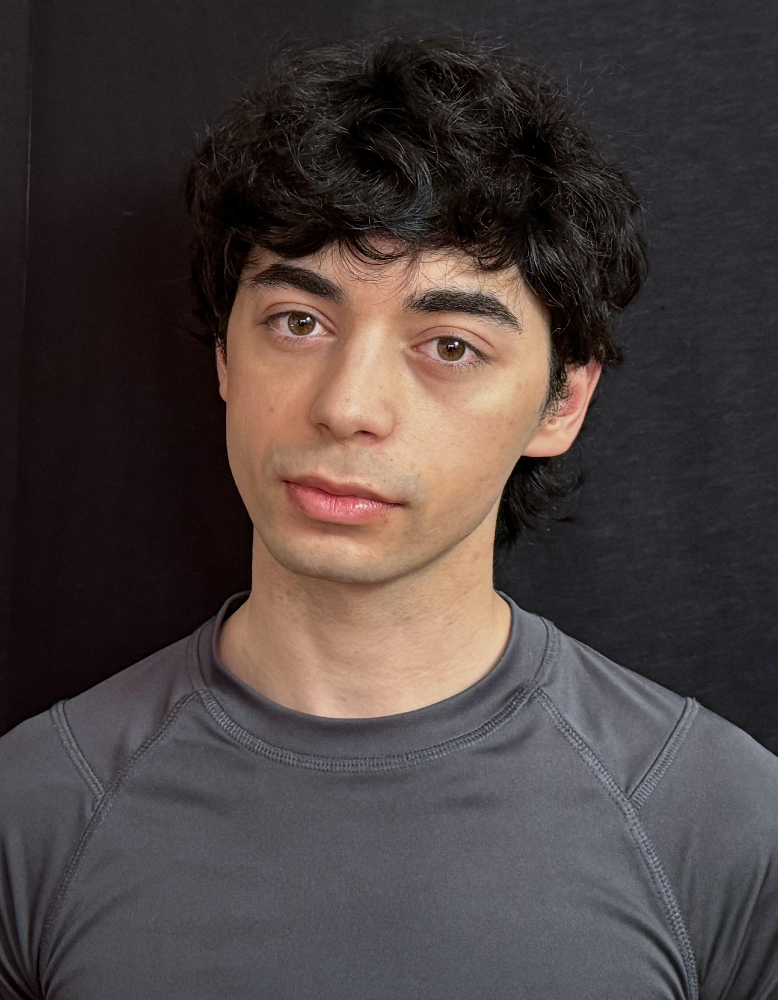

GALERÍA










La vida imita al arte mucha más de lo que el arte imita a la vida
OSCAR WILDE
Desde pequeño siempre me ha gustado imitar a los personajes que veía en la pantalla, desde los dibujos animados hasta Murdock del Equipo A. Sin darme cuenta, lo que más me divertía era jugar con la emoción, así que decidí apuntarme a clases de teatro y desde entonces no he dejado de formarme haciendo lo que más me gusta: interpretar. Ahora, entre mi rincón industrial favorito (Avilés) y Madrid, me muevo para un día poder cumplir mi sueño: vivir de esta profesión.









Email: mikedenz.actor@gmail.com
Tel: +34 653 051 130
Instagram: @denzmike
Residencia: Madrid – Asturias